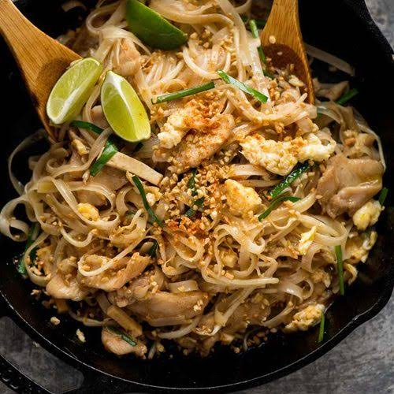

Pad Thai Chicken
To go back to the Index, Click Here

Pad Thai
Thailand’s famous national dish, offering a masterful balance of sweet, sour, salty, and spicy notes. Chewy rice noodles are tossed in a blazing hot wok with a tamarind-based sauce, egg, and fresh aromatics.
Ingredients
- 200g flat dried rice noodles
- 200g medium shrimp or sliced chicken breast
- 2 large eggs
- 2 cups fresh bean sprouts
- 1/2 cup roasted peanuts (crushed)
- 3 tbsp tamarind paste
- 2 tbsp fish sauce
- 1 tbsp palm sugar (or brown sugar)
Steps
- Soak the rice noodles in warm water for about 30 minutes until pliable but still slightly firm, then drain.
- Whisk the tamarind paste, fish sauce, and palm sugar together in a small bowl to make the sauce.
- Heat a wok over high heat with a little oil and stir-fry the shrimp or chicken until just cooked.
- Push the protein to the side of the wok, crack the eggs into the empty space, and scramble them quickly.
- Add the drained noodles and the sauce to the wok, tossing everything continuously until the noodles absorb the liquid and soften.
- Remove from the heat, stir in the bean sprouts, and garnish with crushed peanuts.